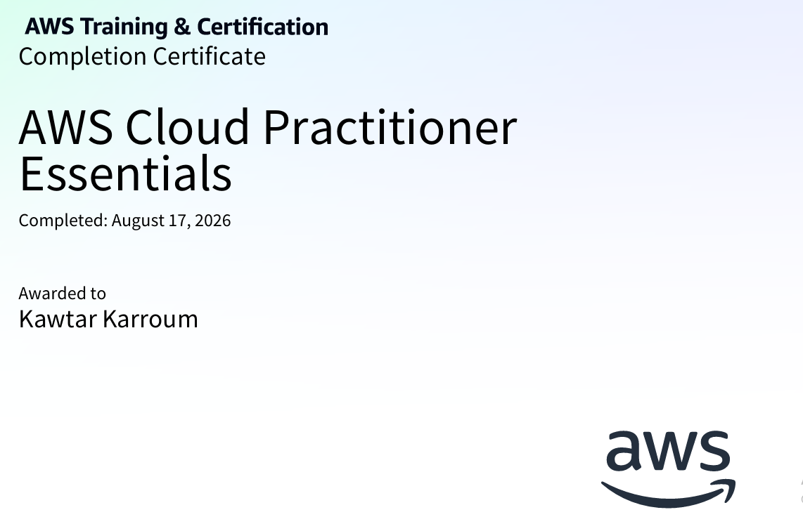

About Me
Welcome to my cloud portfolio! I specialize in building automated CI/CD pipelines, managing infrastructure as code, and hosting scalable web applications using AWS services.
Technical Skills
VS Code
Amazon Web Services (AWS)
GitHub Actions (CI/CD)
Terraform (IaC)
AWS S3 & CloudFront
IAM & Security
Linux / Bash
Git & Version Control
AWS Architecture Diagram
Visual pipeline breakdown showing code deployment from VS Code through GitHub Actions to AWS S3 & CloudFront:

AWS Education & Accomplishments
Successfully completed official AWS Skill Builder training: AWS Cloud Practitioner Essentials.
Verify AWS Skill Builder Course 🔗